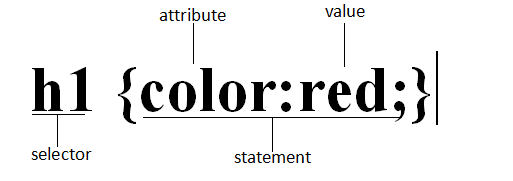
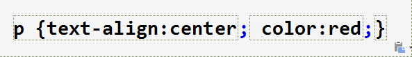

CSS grammar
The CSS rule consists of two main parts: a selector, and one or more declarations.
The selector is usually the HTML element that you need to change the style.
Each statement is made up of one attribute and one value.
The attribute is the style property that you want to set. Each attribute has a value. Properties and values are separated by a colon.
The following schematic diagram shows you the structure of the above section of the code:

Multiple declarations:
If more than one declaration is to be defined, each declaration needs to be separated with a semicolon. The following example shows how to define a middle paragraph of a red text. The last rule is that there is no need to add a semicolon, because the semicolon is a separate symbol in English, not the end sign. However, most experienced designers add semicolons at the end of each statement. The advantage of this is that when you add or subtract the existing rules, you will minimize the possibility of errors.It's like this:
